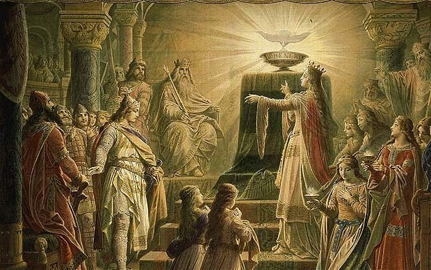

Knights Templar Oasis is the longest running OTO body in New England. Founded originally in 1989 as Knights Templar Camp, our local body has found its home in a number of towns in Massachusetts and New Hampshire, finally settling in Salem, MA.
Our members have a variety of interests across thelema, ceremonial magick, philosophy, hermeticism, kabbalah, tarot, astrology, and many other spiritual systems. Our common bond is our acceptance of the principles of The Book of the Law. We teach classes, celebrate the Gnostic Mass, and are chartered to initiate through the III°.
If you’re interested in becoming involved, or in keeping informed of our activities, watch our calendar or contact the Oasis Secretary.
Sister Jen
master@knightstemplar-oto.org
Frater Hyperion
deputy@knightstemplar-oto.org
Frater ज्ञानं बन्धः
secretary@knightstemplar-oto.org